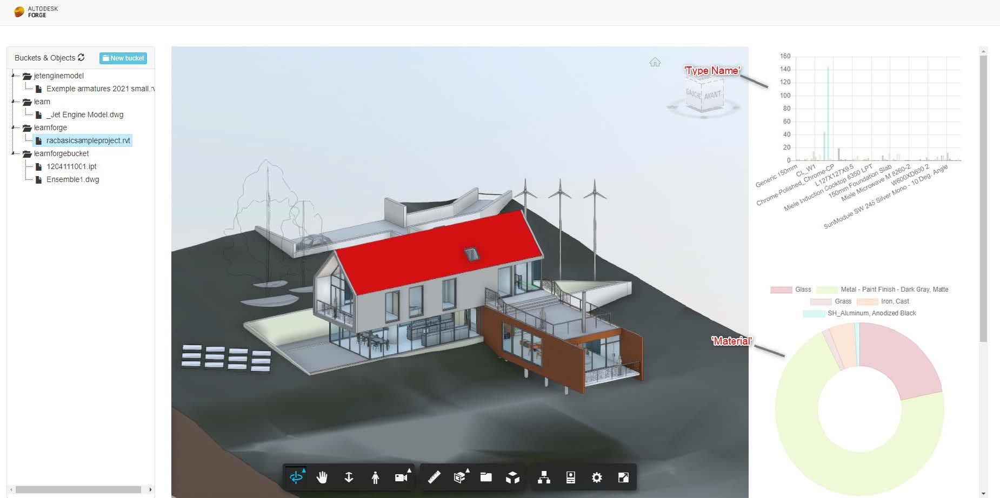
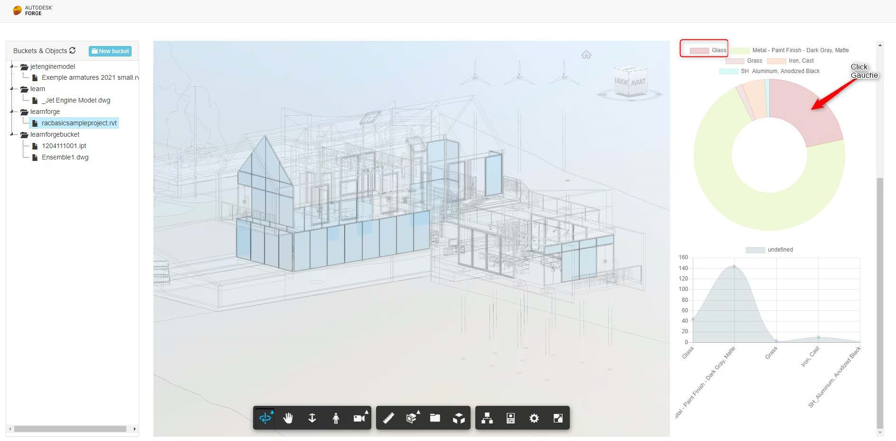

Projet : Autodesk Forge
Description :
Ce projet était le sujet de mon stage de 3ème année en licence informatique chez Atlancad en tant que développeur cloud. Mon objectif était d’analyser, tester et découvrir une technologie sous licence Autodesk appelé Forge afin de remplacer une autre application s’appelant Configurator 360 qui peut par exemple changer les matériaux, les objets et les dimensions d'une voiture en 3D pour ensuite rediriger le client vers une facture du véhicule obtenu par les changements. J'ai alors créé différentes API sous Forge afin de récolter un maximum d'informations sur ces fonctionnalités et ainsi donner une base pour Atlancad.
Outils utilisées :
Exemples d'utilisation d'API :
API de graphiques et d'isolement d'objets:
 
API de changement de couleur et éclatage de l'objet:
Pour en savoir plus sur ce projet, vous pouvez télécharger le pdf de mon rapport de stage ci dessous et me contacter